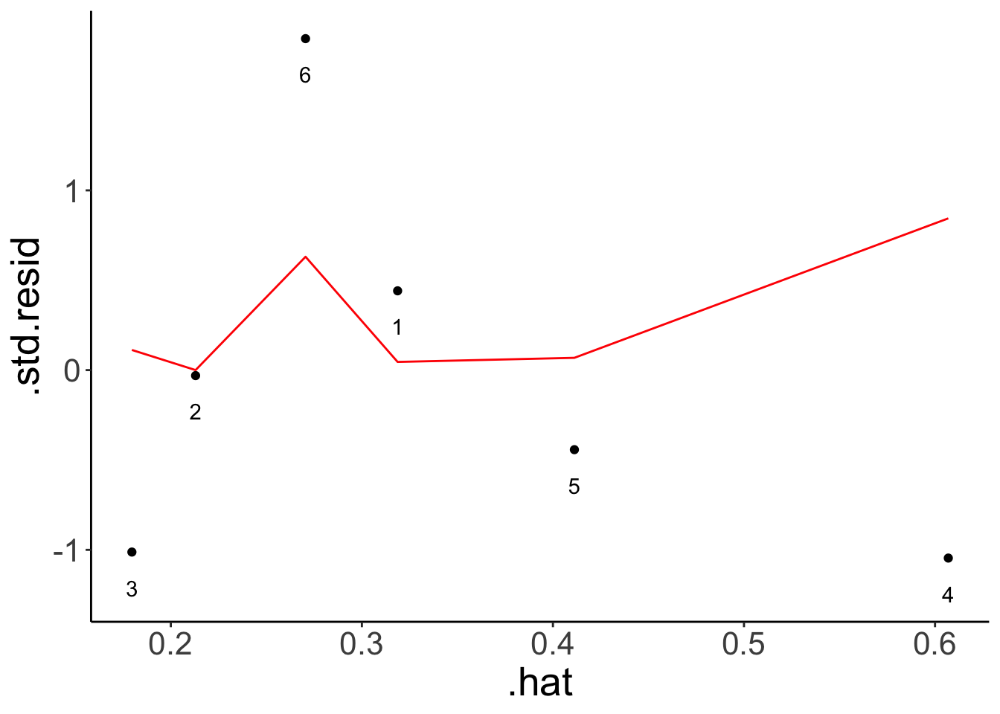
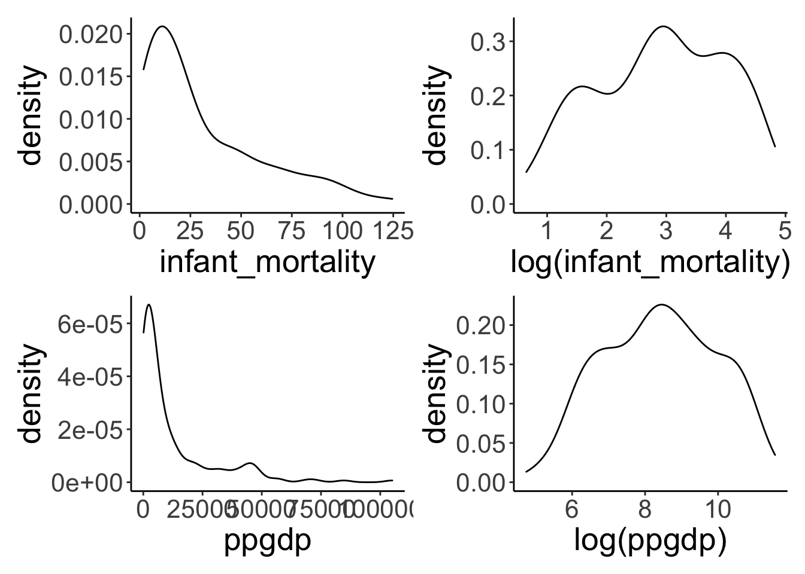

Chapter 25 Model assumptions
25.1 Learning goals
- Review model assumptions.
- Explore how to test for model assumptions.
- What to do if model assumptions aren’t met.
25.2 Load packages and set plotting theme
library("knitr") # for knitting RMarkdown
library("kableExtra") # for nice RMarkdown tables
library("tidybayes") # tidying up results from Bayesian models
library("lme4") # for linear mixed effects models
library("brms") # Bayesian regression models with Stan
library("car") # for bootstrapping regression models
library("broom") # for tidy regression results
library("janitor") # for cleaning up variable names
library("patchwork") # for figure panels
library("ggeffects") # for visualizing estimated marginal means
library("stargazer") # for latex regression tables
library("sjPlot") # for nice RMarkdown regression tables
library("xtable") # for latex tables
library("ggrepel") # for smart text annotation in ggplot
library("tidyverse") # for wrangling, plotting, etc. 25.3 Model assumptions and what to do if they are violated
“Regression diagnostics are methods for determining whether a fitted regression model adequately represents the data.” (p. 385) (???)
25.3.1 Influential data points
Because linear regression models are fitted by minimizing the squared error between prediction and data, the results can be strongly influenced by outliers. There are a number of ways of checking for outliers.
25.3.1.1 Leverage: Hat-values
Data points that are far from the center of the predictor space have potentially greater influence on the results – these points have high leverage. hat-values are a way of characterizing how much influence individual data points have.
## Warning: Missing column names filled in: 'X1' [1]fit.credit = lm(formula = balance ~ income,
data = df.credit)
# fit model without the data point of interest
fit.credit2 = update(fit.credit,
data = df.credit %>%
filter(x1 != 324))
res_with_outlier = fit.credit %>%
augment() %>%
filter(row_number() == 324) %>%
pull(.resid)
res_without_outlier = fit.credit2 %>%
augment(newdata = df.credit) %>%
mutate(.resid = balance - .fitted) %>%
filter(row_number() == 324) %>%
pull(.resid)
hat1 = 1 - (res_with_outlier/res_without_outlier) %>%
round(3)
hat2 = fit.credit %>%
augment() %>%
filter(row_number() == 324) %>%
pull(.hat) %>%
round(3)
print(str_c("hat1: ", hat1))## [1] "hat1: 0.041"## [1] "hat2: 0.041"Cook’s distance is defined as
\[D_i = \frac{e^2_{Si}}{k + 1} \times \frac{h_i}{1-h_1}\],
where \(e^2_{Si}\) is the squared standardized residual, \(k\) is the number of coefficients in the model (excluding the intercept), and \(h_i\) is the hat-value for case \(i\).
Let’s double check here:
fit.credit %>%
augment() %>%
mutate(cook = ((.std.resid^2)/(2 + 1)) * (.hat/(1 - .hat))) %>%
select(contains("cook")) %>%
head(10)## # A tibble: 10 x 2
## .cooksd cook
## <dbl> <dbl>
## 1 0.000000169 0.000000113
## 2 0.00000706 0.00000471
## 3 0.00264 0.00176
## 4 0.00257 0.00171
## 5 0.000530 0.000353
## 6 0.00265 0.00177
## 7 0.000324 0.000216
## 8 0.000441 0.000294
## 9 0.0000457 0.0000304
## 10 0.00529 0.00353Looking good!
fit.credit %>%
augment() %>%
ggplot(aes(x = .hat,
y = .std.resid)) +
geom_point() +
geom_line(aes(y = .cooksd),
color = "red")
25.3.1.1.1 Toy example
Generate some data with an outlier.
set.seed(1)
df.hat = tibble(x = runif(n = 5),
y = 10 * x + rnorm(n = 5, sd = 2)) %>%
bind_rows(tibble(x = 0.7,
y = 15)) %>%
mutate(index = 1:n())Illustrate the hat-values and cook’s distance.
fit.hat = lm(formula = y ~ x,
data = df.hat)
fit.hat %>%
augment() %>%
mutate(index = 1:n()) %>%
ggplot(aes(x = .hat,
y = .std.resid)) +
geom_point() +
geom_line(aes(y = .cooksd),
color = "red") +
geom_text(aes(label = index),
nudge_y = -0.2)
Illustrate what the regression line looks like when all points are fit vs. one of the points is excluded.
ggplot(data = df.hat,
mapping = aes(x = x,
y = y)) +
geom_point(size = 2) +
geom_smooth(method = "lm",
se = F,
color = "blue") +
geom_smooth(data = df.hat %>%
filter(index != 6),
method = "lm",
se = F,
color = "red")## `geom_smooth()` using formula 'y ~ x'
## `geom_smooth()` using formula 'y ~ x'
Summary of each observation.
| y | x | fitted | se_fit | resid | hat | sigma | cooksd | std_resid |
|---|---|---|---|---|---|---|---|---|
| 5.20 | 0.27 | 3.58 | 2.50 | 1.62 | 0.32 | 5.00 | 0.05 | 0.44 |
| 4.55 | 0.37 | 4.67 | 2.05 | -0.12 | 0.21 | 5.12 | 0.00 | -0.03 |
| 2.65 | 0.57 | 6.72 | 1.88 | -4.07 | 0.18 | 4.42 | 0.11 | -1.01 |
| 7.22 | 0.91 | 10.13 | 3.46 | -2.91 | 0.61 | 4.37 | 0.84 | -1.05 |
| 1.43 | 0.20 | 2.93 | 2.85 | -1.51 | 0.41 | 5.00 | 0.07 | -0.44 |
| 15.00 | 0.70 | 8.01 | 2.31 | 6.99 | 0.27 | 1.98 | 0.63 | 1.84 |
Compute cook’s distance
fit.hat_with = lm(formula = y ~ x,
data = df.hat)
fit.hat_without = lm(formula = y ~ x,
data = df.hat %>%
filter(index != 6))
residual_without = fit.hat_without %>%
augment(newdata = df.hat) %>%
clean_names() %>%
mutate(resid = y - fitted) %>%
filter(row_number() == 6) %>%
pull(resid)
residual_with = fit.hat %>%
augment() %>%
clean_names() %>%
filter(row_number() == 6) %>%
pull(resid)
hat = 1 - (residual_with/residual_without)
hat## [1] 0.27051625.3.2 Linear and additive
| mpg | cyl | disp | hp | drat | wt | qsec | vs | am | gear | carb | |
|---|---|---|---|---|---|---|---|---|---|---|---|
| Mazda RX4 | 21.0 | 6 | 160 | 110 | 3.90 | 2.62 | 16.46 | 0 | 1 | 4 | 4 |
| Mazda RX4 Wag | 21.0 | 6 | 160 | 110 | 3.90 | 2.88 | 17.02 | 0 | 1 | 4 | 4 |
| Datsun 710 | 22.8 | 4 | 108 | 93 | 3.85 | 2.32 | 18.61 | 1 | 1 | 4 | 1 |
| Hornet 4 Drive | 21.4 | 6 | 258 | 110 | 3.08 | 3.21 | 19.44 | 1 | 0 | 3 | 1 |
| Hornet Sportabout | 18.7 | 8 | 360 | 175 | 3.15 | 3.44 | 17.02 | 0 | 0 | 3 | 2 |
| Valiant | 18.1 | 6 | 225 | 105 | 2.76 | 3.46 | 20.22 | 1 | 0 | 3 | 1 |
fit.car = lm(formula = mpg ~ 1 + hp,
data = df.car)
ggplot(data = df.car,
mapping = aes(x = hp,
y = mpg)) +
geom_smooth(method = "lm") +
geom_smooth(color = "red",
se = F) +
geom_point()## `geom_smooth()` using formula 'y ~ x'## `geom_smooth()` using method = 'loess' and formula 'y ~ x'
Residual plot
fit.car %>%
augment() %>%
clean_names() %>%
ggplot(data = .,
mapping = aes(x = fitted,
y = resid)) +
geom_hline(yintercept = 0,
linetype = 2) +
geom_point() +
geom_smooth(color = "red",
se = F)
Include a squared predictor
ggplot(data = df.car,
mapping = aes(x = hp,
y = mpg)) +
geom_smooth(method = "lm",
formula = y ~ 1 + x + I(x^2)) +
geom_point()
fit.car2 = lm(formula = mpg ~ 1 + hp + I(hp^2),
data = df.car)
fit.car2 %>%
augment() %>%
clean_names() %>%
ggplot(data = .,
mapping = aes(x = fitted,
y = resid)) +
geom_hline(yintercept = 0,
linetype = 2) +
geom_point() +
geom_smooth(color = "red",
se = F)## `geom_smooth()` using method = 'loess' and formula 'y ~ x'
25.3.3 Normally distributed residuals
Let’s look at the residuals for the credit card model.
fit.credit %>%
augment() %>%
clean_names() %>%
ggplot(data = .,
mapping = aes(x = fitted,
y = resid)) +
geom_point() 
This plot helps assess whether there is homogeneity of variance. Overall, the residual plot looks pretty ok. The diagonal points in the bottom left of th plot arise because credit card balance is not an unbounded variable, and some of the people have a credit card balance of 0.
We can also check whether the residuals are normally distributed by plotting a density of the residuals, and a quantile quantile plot.
df.plot = fit.credit %>%
augment() %>%
clean_names()
p1 = ggplot(data = df.plot,
mapping = aes(x = resid)) +
geom_density() +
labs(title = "Density plot")
p2 = ggplot(data = df.plot,
mapping = aes(sample = scale(resid))) +
geom_qq_line() +
geom_qq() +
labs(title = "QQ plot",
x = "theoretical",
y = "standardized residuals")
p1 + p2
The residuals aren’t really normally distributed. As both the density and the QQ plot show, residuals with low/negative values are more frequent than residuals with high/positive values.
25.3.3.1 Transforming the outcome variable
When the residuals aren’t normally distributed and/or when the variance is not homogeneous, one option is to transform some of the variables.
25.3.3.1.1 Logarithmic transform
df.un = UN %>%
clean_names() %>%
drop_na(infant_mortality, ppgdp)
df.un %>%
head(5) %>%
kable(digits = 2) %>%
kable_styling()| region | group | fertility | ppgdp | life_exp_f | pct_urban | infant_mortality | |
|---|---|---|---|---|---|---|---|
| Afghanistan | Asia | other | 5.97 | 499.0 | 49.49 | 23 | 124.53 |
| Albania | Europe | other | 1.52 | 3677.2 | 80.40 | 53 | 16.56 |
| Algeria | Africa | africa | 2.14 | 4473.0 | 75.00 | 67 | 21.46 |
| Angola | Africa | africa | 5.13 | 4321.9 | 53.17 | 59 | 96.19 |
| Argentina | Latin Amer | other | 2.17 | 9162.1 | 79.89 | 93 | 12.34 |
The linear model fit (blue) versus the “loess” (local regression) fit (red).
ggplot(data = df.un,
mapping = aes(x = ppgdp,
y = infant_mortality)) +
geom_point() +
geom_smooth(method = "lm",
aes(color = "lm"),
fill = "blue",
alpha = 0.1) +
geom_smooth(aes(color = "loess"),
fill = "red",
alpha = 0.1) +
scale_color_manual(values = c("blue", "red")) +
theme(legend.title = element_blank(),
legend.position = c(1, 1),
legend.justification = c(1, 1)) +
guides(color = guide_legend(override.aes = list(fill = c("red", "blue")),
reverse = T))
Densities of the untransformed and log-transformed variables.
p1 = ggplot(data = df.un,
mapping = aes(x = infant_mortality)) +
geom_density()
# log transformed
p2 = ggplot(data = df.un,
mapping = aes(x = log(infant_mortality))) +
geom_density()
p3 = ggplot(data = df.un,
mapping = aes(x = ppgdp)) +
geom_density()
# log transformed
p4 = ggplot(data = df.un,
mapping = aes(x = log(ppgdp))) +
geom_density()
p1 + p2 + p3 + p4 +
plot_layout(nrow = 2)
Fitting different models with / without transformations.
fit.mortality1 = lm(formula = infant_mortality ~ ppgdp,
data = df.un)
fit.mortality2 = lm(formula = log(infant_mortality) ~ log(ppgdp),
data = df.un)
fit.mortality3 = lm(formula = log(infant_mortality) ~ ppgdp,
data = df.un)
fit.mortality4 = lm(formula = infant_mortality ~ log(ppgdp),
data = df.un)
summary(fit.mortality1)##
## Call:
## lm(formula = infant_mortality ~ ppgdp, data = df.un)
##
## Residuals:
## Min 1Q Median 3Q Max
## -31.48 -18.65 -8.59 10.86 83.59
##
## Coefficients:
## Estimate Std. Error t value Pr(>|t|)
## (Intercept) 41.3780016 2.2157454 18.675 < 2e-16 ***
## ppgdp -0.0008656 0.0001041 -8.312 1.73e-14 ***
## ---
## Signif. codes: 0 '***' 0.001 '**' 0.01 '*' 0.05 '.' 0.1 ' ' 1
##
## Residual standard error: 25.13 on 191 degrees of freedom
## Multiple R-squared: 0.2656, Adjusted R-squared: 0.2618
## F-statistic: 69.08 on 1 and 191 DF, p-value: 1.73e-14##
## Call:
## lm(formula = log(infant_mortality) ~ log(ppgdp), data = df.un)
##
## Residuals:
## Min 1Q Median 3Q Max
## -1.16789 -0.36738 -0.02351 0.24544 2.43503
##
## Coefficients:
## Estimate Std. Error t value Pr(>|t|)
## (Intercept) 8.10377 0.21087 38.43 <2e-16 ***
## log(ppgdp) -0.61680 0.02465 -25.02 <2e-16 ***
## ---
## Signif. codes: 0 '***' 0.001 '**' 0.01 '*' 0.05 '.' 0.1 ' ' 1
##
## Residual standard error: 0.5281 on 191 degrees of freedom
## Multiple R-squared: 0.7662, Adjusted R-squared: 0.765
## F-statistic: 625.9 on 1 and 191 DF, p-value: < 2.2e-16##
## Call:
## lm(formula = log(infant_mortality) ~ ppgdp, data = df.un)
##
## Residuals:
## Min 1Q Median 3Q Max
## -1.61611 -0.48094 -0.07858 0.53930 2.17745
##
## Coefficients:
## Estimate Std. Error t value Pr(>|t|)
## (Intercept) 3.479e+00 6.537e-02 53.23 <2e-16 ***
## ppgdp -4.595e-05 3.072e-06 -14.96 <2e-16 ***
## ---
## Signif. codes: 0 '***' 0.001 '**' 0.01 '*' 0.05 '.' 0.1 ' ' 1
##
## Residual standard error: 0.7413 on 191 degrees of freedom
## Multiple R-squared: 0.5394, Adjusted R-squared: 0.537
## F-statistic: 223.7 on 1 and 191 DF, p-value: < 2.2e-16##
## Call:
## lm(formula = infant_mortality ~ log(ppgdp), data = df.un)
##
## Residuals:
## Min 1Q Median 3Q Max
## -38.239 -11.609 -2.829 8.122 82.183
##
## Coefficients:
## Estimate Std. Error t value Pr(>|t|)
## (Intercept) 155.7698 7.2431 21.51 <2e-16 ***
## log(ppgdp) -14.8617 0.8468 -17.55 <2e-16 ***
## ---
## Signif. codes: 0 '***' 0.001 '**' 0.01 '*' 0.05 '.' 0.1 ' ' 1
##
## Residual standard error: 18.14 on 191 degrees of freedom
## Multiple R-squared: 0.6172, Adjusted R-squared: 0.6152
## F-statistic: 308 on 1 and 191 DF, p-value: < 2.2e-16Diagnostics plots for the model without transformed variables.


Residual plot using ggplot.
fit.mortality1 %>%
augment() %>%
clean_names() %>%
ggplot(data = .,
mapping = aes(x = fitted,
y = resid)) +
geom_hline(yintercept = 0,
linetype = 2) +
geom_point() +
geom_smooth(color = "red",
se = F)## `geom_smooth()` using method = 'loess' and formula 'y ~ x'
Diagnostic plots for the log-log transformed model.


Model fit.
ggplot(data = df.un,
mapping = aes(x = log(ppgdp),
y = log(infant_mortality))) +
geom_point() +
geom_smooth(method = "lm",
color = "blue",
fill = "blue",
alpha = 0.1)
Illustration of the model predictions in the original scale.
## Model has log-transformed predictors. Consider using `terms="ppgdp [exp]"` to back-transform scale.## Model has log-transformed response. Back-transforming predictions to original response scale. Standard errors are still on the log-scale.##
## # Predicted values of infant_mortality
## # x = ppgdp
##
## x | Predicted | SE | 95% CI
## -----------------------------------------
## 4 | 1406.29 | 0.18 | [993.36, 1990.87]
## 5 | 1225.46 | 0.17 | [874.79, 1716.72]
## 6 | 1095.12 | 0.17 | [788.48, 1521.01]
## 7 | 995.79 | 0.16 | [722.18, 1373.06]
## 8 | 917.06 | 0.16 | [669.27, 1256.60]
## 9 | 852.80 | 0.16 | [625.82, 1162.11]
## 10 | 799.15 | 0.16 | [589.35, 1083.62]
## 12 | 714.15 | 0.15 | [531.18, 960.13]## Model has log-transformed response. Back-transforming predictions to original response scale. Standard errors are still on the log-scale.
Model predictions for models with multiple predictors.
# with log transforms
fit.mortality5 = lm(formula = log(infant_mortality) ~ log(ppgdp) + group,
data = df.un)
# without log transforms
fit.mortality6 = lm(formula = infant_mortality ~ ppgdp + group,
data = df.un)
p1 = ggpredict(fit.mortality5,
terms = c("ppgdp [exp]", "group")) %>%
plot() +
labs(title = "Prediction with log transform") +
coord_cartesian(xlim = c(0, 20000))
p2 = ggpredict(fit.mortality6,
terms = c("ppgdp", "group")) %>%
plot() +
labs(title = "Prediction without log transform") +
coord_cartesian(xlim = c(0, 20000))
p1 + p2
25.3.4 Non-parametric tests
25.3.4.1 Mann-Whitney
df.ttest = tibble(group1 = rnorm(n = 20, mean = 10, sd = 1),
group2 = rnorm(n = 20, mean = 8, sd = 3)) %>%
pivot_longer(cols = everything()) %>%
mutate(participant = 1:n())ggplot(data = df.ttest,
mapping = aes(x = name,
y = value)) +
geom_point(alpha = 0.3,
position = position_jitter(width = 0.1)) +
stat_summary(fun.data = "mean_cl_boot")
##
## Welch Two Sample t-test
##
## data: value by name
## t = 3.3, df = 22.304, p-value = 0.003221
## alternative hypothesis: true difference in means is not equal to 0
## 95 percent confidence interval:
## 0.8300203 3.6319540
## sample estimates:
## mean in group group1 mean in group group2
## 10.035302 7.804315##
## Wilcoxon rank sum test
##
## data: value by name
## W = 287, p-value = 0.01809
## alternative hypothesis: true location shift is not equal to 025.3.5 Bootstrapping regressions
This section is based on this post here.
# make reproducible
set.seed(1)
n = 250
df.turkey = tibble(turkey_time = runif(n = n, min = 0, max = 50),
nap_time = 500 + turkey_time ^ 2 + rnorm(n, sd = 16))Visualize the data
ggplot(data = df.turkey,
mapping = aes(x = turkey_time,
y = nap_time)) +
geom_smooth(method = "lm") +
geom_point() 
A simple linear regression doesn’t fit the data well (not suprising since we included a squared predictor).
Let’s fit a simple linear model and print out the model summary.
##
## Call:
## lm(formula = nap_time ~ 1 + turkey_time, data = df.turkey)
##
## Residuals:
## Min 1Q Median 3Q Max
## -212.82 -146.78 -55.17 125.74 462.52
##
## Coefficients:
## Estimate Std. Error t value Pr(>|t|)
## (Intercept) 15.4974 23.3827 0.663 0.508
## turkey_time 51.5746 0.8115 63.557 <2e-16 ***
## ---
## Signif. codes: 0 '***' 0.001 '**' 0.01 '*' 0.05 '.' 0.1 ' ' 1
##
## Residual standard error: 172.4 on 248 degrees of freedom
## Multiple R-squared: 0.9422, Adjusted R-squared: 0.9419
## F-statistic: 4039 on 1 and 248 DF, p-value: < 2.2e-16A regression with a squared predictor would fit well.
fit.turkey2 = lm(formula = nap_time ~ 1 + I(turkey_time ^ 2),
data = df.turkey)
summary(fit.turkey2)##
## Call:
## lm(formula = nap_time ~ 1 + I(turkey_time^2), data = df.turkey)
##
## Residuals:
## Min 1Q Median 3Q Max
## -45.611 -9.911 -0.652 11.137 43.008
##
## Coefficients:
## Estimate Std. Error t value Pr(>|t|)
## (Intercept) 4.994e+02 1.575e+00 317.0 <2e-16 ***
## I(turkey_time^2) 1.001e+00 1.439e-03 695.3 <2e-16 ***
## ---
## Signif. codes: 0 '***' 0.001 '**' 0.01 '*' 0.05 '.' 0.1 ' ' 1
##
## Residual standard error: 16.23 on 248 degrees of freedom
## Multiple R-squared: 0.9995, Adjusted R-squared: 0.9995
## F-statistic: 4.835e+05 on 1 and 248 DF, p-value: < 2.2e-16fit.turkey2 %>%
augment() %>%
clean_names() %>%
ggplot(data = .,
mapping = aes(x = i_turkey_time_2,
y = nap_time)) +
geom_line(mapping = aes(y = fitted),
color = "blue") +
geom_point() 
Let’s fit a bootstrap regression.
##
## Number of bootstrap replications R = 999
## original bootBias bootSE bootMed
## (Intercept) 15.497 -1.130589 29.330 15.080
## turkey_time 51.575 0.023717 1.058 51.625| term | estimate | std.error | statistic | p.value | conf.low | conf.high |
|---|---|---|---|---|---|---|
| (Intercept) | 15.50 | 23.38 | 0.66 | 0.51 | -30.56 | 61.55 |
| turkey_time | 51.57 | 0.81 | 63.56 | 0.00 | 49.98 | 53.17 |
| term | statistic | bias | std.error | conf.low | conf.high |
|---|---|---|---|---|---|
| (Intercept) | 15.50 | -1.13 | 29.33 | -47.64 | 71.64 |
| turkey_time | 51.57 | 0.02 | 1.06 | 49.35 | 53.61 |
We see that the confidence intervals using the bootstrap method are wider than the ones that use the linear regression model (particularly for the intercept).
25.4 Additional resources
25.5 Session info
Information about this R session including which version of R was used, and what packages were loaded.
## R version 3.6.2 (2019-12-12)
## Platform: x86_64-apple-darwin15.6.0 (64-bit)
## Running under: macOS Mojave 10.14.6
##
## Matrix products: default
## BLAS: /Library/Frameworks/R.framework/Versions/3.6/Resources/lib/libRblas.0.dylib
## LAPACK: /Library/Frameworks/R.framework/Versions/3.6/Resources/lib/libRlapack.dylib
##
## locale:
## [1] en_US.UTF-8/en_US.UTF-8/en_US.UTF-8/C/en_US.UTF-8/en_US.UTF-8
##
## attached base packages:
## [1] stats graphics grDevices utils datasets methods base
##
## other attached packages:
## [1] forcats_0.5.0 stringr_1.4.0 dplyr_0.8.4 purrr_0.3.3
## [5] readr_1.3.1 tidyr_1.0.2 tibble_2.1.3 tidyverse_1.3.0
## [9] ggrepel_0.8.1 ggplot2_3.3.0 xtable_1.8-4 sjPlot_2.8.2
## [13] stargazer_5.2.2 ggeffects_0.14.1 patchwork_1.0.0 janitor_1.2.1
## [17] broom_0.5.5 car_3.0-6 carData_3.0-3 brms_2.12.0
## [21] Rcpp_1.0.3 lme4_1.1-21 Matrix_1.2-18 tidybayes_2.0.1
## [25] kableExtra_1.1.0 knitr_1.28
##
## loaded via a namespace (and not attached):
## [1] utf8_1.1.4 tidyselect_1.0.0 htmlwidgets_1.5.1
## [4] grid_3.6.2 munsell_0.5.0 codetools_0.2-16
## [7] effectsize_0.2.0 DT_0.12 miniUI_0.1.1.1
## [10] withr_2.1.2 Brobdingnag_1.2-6 colorspace_1.4-1
## [13] highr_0.8 rstudioapi_0.11 stats4_3.6.2
## [16] bayesplot_1.7.1 labeling_0.3 emmeans_1.4.5
## [19] rstan_2.19.3 farver_2.0.3 bridgesampling_1.0-0
## [22] coda_0.19-3 vctrs_0.2.3 generics_0.0.2
## [25] TH.data_1.0-10 xfun_0.12 R6_2.4.1
## [28] markdown_1.1 assertthat_0.2.1 promises_1.1.0
## [31] scales_1.1.0 multcomp_1.4-12 nnet_7.3-13
## [34] gtable_0.3.0 processx_3.4.2 sandwich_2.5-1
## [37] rlang_0.4.5 splines_3.6.2 acepack_1.4.1
## [40] checkmate_2.0.0 inline_0.3.15 yaml_2.2.1
## [43] reshape2_1.4.3 abind_1.4-5 modelr_0.1.6
## [46] threejs_0.3.3 crosstalk_1.0.0 backports_1.1.5
## [49] httpuv_1.5.2 rsconnect_0.8.16 Hmisc_4.3-1
## [52] tools_3.6.2 bookdown_0.18 ellipsis_0.3.0
## [55] RColorBrewer_1.1-2 ggridges_0.5.2 plyr_1.8.6
## [58] base64enc_0.1-3 ps_1.3.2 prettyunits_1.1.1
## [61] rpart_4.1-15 zoo_1.8-7 haven_2.2.0
## [64] cluster_2.1.0 fs_1.3.2 magrittr_1.5
## [67] data.table_1.12.8 openxlsx_4.1.4 colourpicker_1.0
## [70] reprex_0.3.0 mvtnorm_1.1-0 sjmisc_2.8.3
## [73] matrixStats_0.55.0 hms_0.5.3 shinyjs_1.1
## [76] mime_0.9 evaluate_0.14 arrayhelpers_1.1-0
## [79] shinystan_2.5.0 rio_0.5.16 sjstats_0.17.9
## [82] jpeg_0.1-8.1 readxl_1.3.1 gridExtra_2.3
## [85] rstantools_2.0.0 compiler_3.6.2 crayon_1.3.4
## [88] minqa_1.2.4 StanHeaders_2.21.0-1 htmltools_0.4.0
## [91] mgcv_1.8-31 later_1.0.0 Formula_1.2-3
## [94] lubridate_1.7.4 DBI_1.1.0 sjlabelled_1.1.3
## [97] dbplyr_1.4.2 MASS_7.3-51.5 boot_1.3-24
## [100] cli_2.0.2 parallel_3.6.2 insight_0.8.1
## [103] igraph_1.2.4.2 pkgconfig_2.0.3 foreign_0.8-76
## [106] xml2_1.2.2 svUnit_0.7-12 dygraphs_1.1.1.6
## [109] webshot_0.5.2 estimability_1.3 rvest_0.3.5
## [112] snakecase_0.11.0 callr_3.4.2 digest_0.6.25
## [115] parameters_0.5.0 rmarkdown_2.1 cellranger_1.1.0
## [118] htmlTable_1.13.3 curl_4.3 shiny_1.4.0
## [121] gtools_3.8.1 nloptr_1.2.1 lifecycle_0.1.0
## [124] nlme_3.1-145 jsonlite_1.6.1 viridisLite_0.3.0
## [127] fansi_0.4.1 pillar_1.4.3 lattice_0.20-40
## [130] loo_2.2.0 fastmap_1.0.1 httr_1.4.1
## [133] pkgbuild_1.0.6 survival_3.1-8 glue_1.3.1
## [136] xts_0.12-0 bayestestR_0.5.2 zip_2.0.4
## [139] png_0.1-7 shinythemes_1.1.2 stringi_1.4.6
## [142] performance_0.4.4 latticeExtra_0.6-29